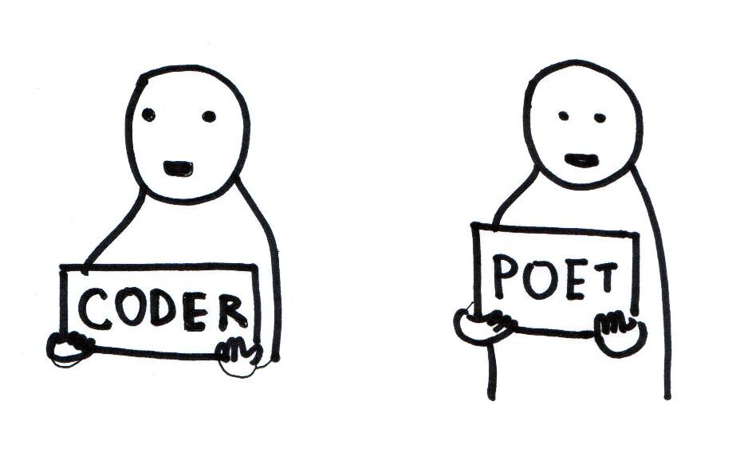

Artist, Educator, Activist, Organizer, Coder
Taeyoon Choi believes the elegance in the abstraction and repetition of computation can only be described as poetry. In 2013, he cofounded the School for Poetic Computation, whose motto is “more poetry, less demo.” It’s a hybrid of a school, residency and research group that explores the intersections of code, design, hardware, and theory. Choi lives between New York and Seoul, making art projects, teaching future teachers, unlearning the wall of disability, hacking, skating, cooking, and drawing.
From a conversation with Laurel Schwulst
June 2, 2017
I draw in order to understand. So when drawing about computers, it’s not because I want to illustrate but because I like taking complex things apart. For me, drawing is a way of de-mystifying many of these complex ideas. There’s a lot of play and curiosity with drawing. When I hear a talk or when I read a complex book, I always ask, “Would I be able to draw that? Would I be able to understand it if I draw that?” It’s not necessarily an end, but it’s a process.
I find commercial software kills my creativity. It’s designed to do something very professional, like a production tool. In the beginning, I felt like I couldn’t really go underneath and truly understand its interface.
When you’re learning to paint or sculpt, you learn to understand the material. It’s important to see how to make your own paint, or how to carve your stone, or do ceramics, to work with clay. It’s really, really physical. I wanted to have that sort of experience with technology, especially the computer. I think I’m most creative when looking at electronic signals and seeing what’s happening inside a computer. I’m sculpting with signals. I understand what’s happening, and I can control the behavior of my robots or sound installation. It’s very immediate. Unlike commercial software, like Photoshop, nobody has decided things for me. It’s an open plane to be creative. I can understand every single step. Even though sometimes I don’t do every step when I work with other engineers and collaborators, I still have an appreciation for how things work so we can collaboratively be conscious of our decisions.
The School for Poetic Computation (SFPC) began for a couple reasons:
The official story is that we, the co-founders, were not satisfied in teaching at a big university. We wanted to make something very transparent and very lightweight because the big university is like a black box. That is, students pay a lot of money, but teachers don’t get paid very much. Also, knowledge seems to be in the similarly opaque black box between input and output. So we started school from scratch.
My personal story is that I was inspired by Occupy Wall Street and participated in projects like the Public School New York, an open source school. That was a way of looking at how community could be formed through learning. For me, SFPC is a continuation of that activist practice.
The school’s motto is “more poetry, less demo.” Teaching in any combination of art and technology usually focuses only on making things work or demonstrating a technique. Instead, we wanted to look at the fundamental aesthetics and poetics of code and technology. Poems are not meant to be functional. Poems are more exploratory, and poems are expressive and very human. We looked at code that way.
I think I learn very slowly. I’m not a fast learner. It took me years to learn very basic code. I still feel very naïve when I’m coding. I think most people learn that way, and we as teachers are often forced into situations where we need to be very efficient with our lectures and our assignments. That’s really stressful.
SFPC is very unique: it’s a 10 week program, so it’s intense. People learn a lot in those 10 weeks, but I have a longer term goal. I’d like it to become something like a post graduate program so that students who have done the program can return, preferably for three years or more, where they could truly develop their own practice but also collaborate with me and the other teachers with our projects. There is reciprocity that can only happen in duration. That’s often how engineering research works in lab situations. I think art could be done like that, too.
Taeyoon Choi recommends Korean restaurants in ny: